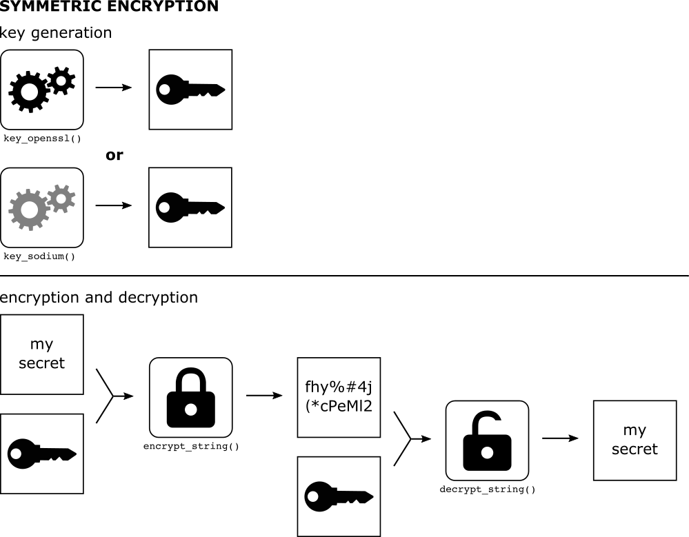
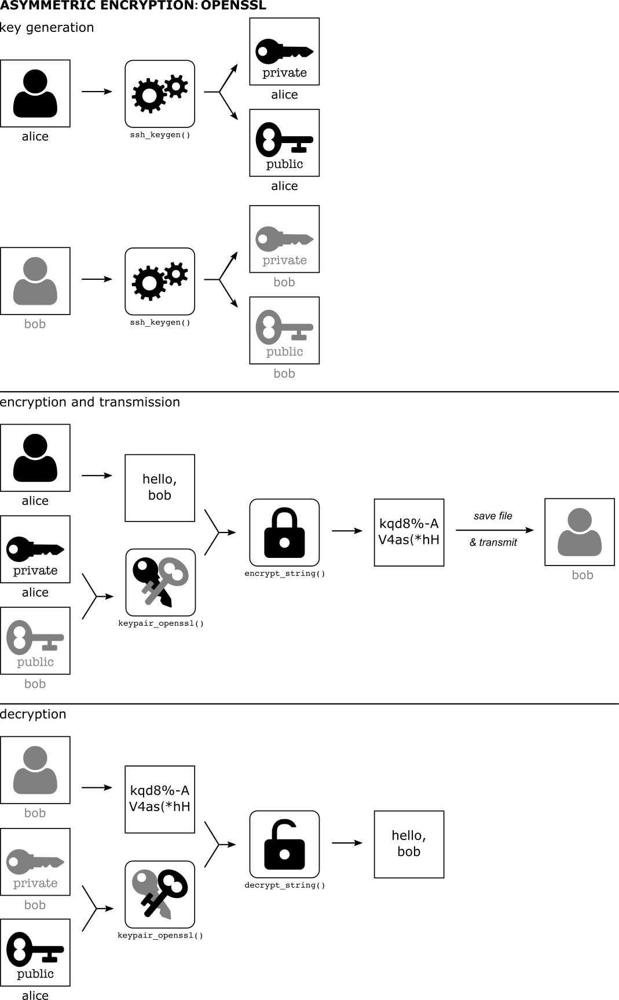

This package tries to smooth over some of the differences in encryption approaches (symmetric vs. asymmetric, sodium vs. openssl) to provide a simple interface for users who just want to encrypt or decrypt things.
The scope of the package is to protect data that has been saved to disk. It is not designed to stop an attacker targeting the R process itself to determine the contents of sensitive data. The package does try to prevent you accidentally saving to disk the contents of sensitive information, including the keys that could decrypt such information.
This vignette works through the basic functionality of the package. It does not offer much in the way of an introduction to encryption itself; for that see the excellent vignettes in the openssl and sodium packages (see vignette("crypto101") and vignette("bignum") for information about how encryption works). This package is a wrapper around those packages in order to make them more accessible.
Keys and the like
To encrypt anything we need a key. There are two sorts of key “types” we will concern ourselves with here “symmetric” and “asymmetric”.
“symmetric” keys are used for storing secrets that multiple people need to access. Everyone has the same key (which is just a bunch of bytes) and with that we can either encrypt data or decrypt it.
a “key pair” is a public and a private key; this is used in communication. You hold a private key that nobody else ever sees and a public key that you can copy around all over the show. These can be used for a couple of different patterns of communication (see below).
We support symmetric keys and asymmetric key pairs from the openssl and sodium packages (which wrap around industry-standard cryptographic libraries) - this vignette will show how to create and load keys of different types as they’re used.
The openssl keys have the advantage of a standard key format, and that many people (especially on Linux and macOS) have a keypair already (see below if you’re not sure if you do). The sodium keys have the advantage of being a new library, starting from a clean slate rather than carrying with it accumulated ideas from the last 20 years of development.
The idea in cyphr is that we can abstract away some differences in the types of keys and the functions that go with them to create a standardised interface to encrypting and decrypting strings, R objects, files and raw vectors. With that, we can then create wrappers around functions that create files and simplify the process of adding encryption into a data workflow.
Below, I’ll describe the sorts of keys that cyphr supports and in the sections following describe how these can be used to actually do some encryption.
Symmetric encryption

Illustration of Symmetric Encryption
This is the simplest form of encryption because everyone has the same key (like a key to your house or a single password). This raises issues (like how do you store the key without other people reading it) but we can deal with that below.
openssl
To generate a key with openssl, you can use:
k <- openssl::aes_keygen()which generates a raw vector
k## aes 88:de:83:be:95:8a:6b:ab:da:51:38:08:f1:5b:a1:69(this prints nicely but it really is stored as a 16 byte raw vector).
The encryption functions that this key supports are openssl::aes_cbc_encrypt, openssl::aes_ctr_encrypt and openssl::aes_gcm_encrypt (along with the corresponding decryption functions). The cyphr package tries to abstract this away by using a wrapper `cyphr::key_openssl
key <- cyphr::key_openssl(k)
key## <cyphr_key: openssl>With this key, one can encrypt a string with cyphr::encrypt_string:
secret <- cyphr::encrypt_string("my secret string", key)and decrypt it again with cyphr::decrypt_string:
cyphr::decrypt_string(secret, key)## [1] "my secret string"See below for more functions that use these key objects.
sodium
The interface is almost identical using sodium symmetric keys. To generate a symmetric key with libsodium you would use sodium::keygen
k <- sodium::keygen()This is really just a raw vector of length 32, without even any class attribute!
The encryption functions that this key supports are sodium::data_encrypt and sodium::data_decrypt. To create a key for use with cyphr that knows this, use:
key <- cyphr::key_sodium(k)
key## <cyphr_key: sodium>This key can then be used with the high-level cyphr encryption functions described below.
Asymmetric encryption (“key pairs”)

Illustration of Asymmetric Encryption
With asymmetric encryption everybody has two keys that differ from everyone else’s key. One key is public and can be shared freely with anyone you would like to communicate with and the other is private and must never be disclosed.
In the sodium package there is a vignette (vignette("crypto101")) that gives a gentle introduction to how this all works. In practice, you end up creating a pair of keys for yourself. Then to encrypt or decrypt something you encrypt messages with the recipient’s public key and they (and only they) can decrypt it with their private key.
One use for asymmetric encryption is to encrypt a shared secret (such as a symmetric key) - with this you can then safely store or communicate a symmetric key without disclosing it.
openssl
Let’s suppose that we have two parties “Alice” and “Bob” who want to talk with one another. For demonstration purposes we need to generate SSH keys (with no password) in temporary directories (to comply with CRAN policies). In a real situation these would be on different machines (Alice has no access to Bob’s key!) and these keys would be password protected.
path_key_alice <- cyphr::ssh_keygen(password = FALSE)
path_key_bob <- cyphr::ssh_keygen(password = FALSE)Note that each directory contains a public key (id_rsa.pub) and a private key (id_rsa).
dir(path_key_alice)## [1] "id_rsa" "id_rsa.pub"
dir(path_key_bob)## [1] "id_rsa" "id_rsa.pub"Below, the full path to the key (e.g., .../id_rsa) could be used in place of the directory name if you prefer.
If Alice wants to send a message to Bob she needs to use her private key and his public key
pair_a <- cyphr::keypair_openssl(path_key_bob, path_key_alice)
pair_a## <cyphr_keypair: openssl>with this pair she can write a message to “bob”:
secret <- cyphr::encrypt_string("secret message", pair_a)The secret is now just a big pile of bytes
secret## [1] 58 0a 00 00 00 03 00 04 00 03 00 03 05 00 00 00 00 05 55 54 46 2d 38 00 00
## [26] 02 13 00 00 00 04 00 00 00 18 00 00 00 10 4e c6 cc 51 06 b9 53 75 46 4a 4b
## [51] f8 36 c1 2c 2d 00 00 00 18 00 00 01 00 39 4a 89 2e 13 86 74 ce 56 36 52 cb
## [76] c4 1f 58 91 63 03 68 98 1a a9 14 fc e7 cc 6f 68 a2 01 88 ff b7 be 58 56 59
## [101] 5c 64 c2 26 3a 6f 2a a0 f3 f5 3a 53 d4 ae 50 66 5c 4d 69 aa b0 59 17 9b 8a
## [126] 0e c2 f3 09 3c 3e 97 dc 6b b9 da 0b 6d 78 1d 58 e3 f6 33 4d 6b 00 7e 51 4f
## [151] 63 1d f9 5d c7 09 0a 55 1b 76 f4 6f a9 71 95 41 ed f8 4b b8 c1 5c c3 4f d4
## [176] 6a 09 04 35 a7 ca a1 a9 cc 97 29 c6 db 2a a2 ac 29 05 a4 27 67 a9 0c 18 7b
## [201] 00 ce 11 29 6d dd 56 c7 5b c7 30 4f 36 39 12 2f 23 02 8f 59 83 35 93 52 8e
## [226] f5 d5 9b ca 3c 8d c8 13 e7 bc 96 24 c0 9f 36 fb 43 14 91 ad 48 38 fc 56 8d
## [251] c2 9a c7 73 73 86 e7 68 a9 48 e4 cc 43 3b aa d7 cf 0f 50 7b 23 d6 32 a1 29
## [276] 21 59 2e 5d f9 21 54 0e 7c 59 86 af 25 89 0b 22 25 7d 07 c5 80 7c aa 89 4c
## [301] 1a 00 96 70 97 e7 4b 02 d8 51 0f 21 04 f0 eb 32 f2 74 6f 00 00 00 18 00 00
## [326] 00 10 9d 38 18 2d d7 81 97 cb 41 0e 52 88 c1 17 bf 04 00 00 00 18 00 00 01
## [351] 00 26 b6 31 e0 de 05 f5 04 30 4b 5e 9d 91 51 cd fd cc d1 6e 4c a5 7e c5 74
## [376] 35 5b 90 01 5f d0 fa 53 2a c2 11 11 d6 df 4b a4 c2 50 e2 9c 1a 1f 3f f8 80
## [401] 57 74 dd b3 28 7f f6 8a 29 3d d2 cc c2 34 36 37 22 38 e1 9e 6c 5f b8 e1 ff
## [426] 22 91 32 bb 36 8a c8 9e 71 6b e6 d1 c8 b4 fb 0a 05 b6 ae 63 b5 4d ec 29 9f
## [451] f6 52 8e 29 0e 91 43 2a d3 e8 9a 69 91 42 06 1d 66 c8 d4 af b8 42 01 08 8e
## [476] c3 ce d7 e0 ec 4f 1b 7d f4 b8 82 7b 56 84 06 3c 66 8f e8 ea 7b e7 6f 29 5c
## [501] 9d e1 d4 f0 a1 1a 02 fb 05 c9 ce e7 57 b0 e8 bf 8a 60 76 6d 02 d5 1a 47 81
## [526] 97 15 e3 33 80 5d b1 0b 83 e5 3c 3d 5f 62 88 65 28 39 f1 dd 28 27 f7 9d 3e
## [551] 82 1d 85 88 f3 15 2d 2b b2 6b d2 39 6a c2 59 8a fc ea 36 4a 8b cd d4 d1 67
## [576] bc d6 51 62 3e bb 31 17 a9 f3 4d 8f a5 29 17 b6 11 aa 3e d6 83 f7 8f 33 37
## [601] 4a 3d 50 93 f9 e2 f0 00 00 04 02 00 00 00 01 00 04 00 09 00 00 00 05 6e 61
## [626] 6d 65 73 00 00 00 10 00 00 00 04 00 04 00 09 00 00 00 02 69 76 00 04 00 09
## [651] 00 00 00 07 73 65 73 73 69 6f 6e 00 04 00 09 00 00 00 04 64 61 74 61 00 04
## [676] 00 09 00 00 00 09 73 69 67 6e 61 74 75 72 65 00 00 00 feNote that unlike symmetric encryption above, Alice cannot decrypt her own message:
cyphr::decrypt_string(secret, pair_a)## Error: OpenSSL error in RSA_padding_check_PKCS1_type_2: pkcs decoding errorFor Bob to read the message, he uses his private key and Alice’s public key (which she has transmitted to him previously).
pair_b <- cyphr::keypair_openssl(path_key_alice, path_key_bob)With this keypair, Bob can decrypt Alice’s message
cyphr::decrypt_string(secret, pair_b)## [1] "secret message"And send one back of his own:
secret2 <- cyphr::encrypt_string("another message", pair_b)
secret2## [1] 58 0a 00 00 00 03 00 04 00 03 00 03 05 00 00 00 00 05 55 54 46 2d 38 00 00
## [26] 02 13 00 00 00 04 00 00 00 18 00 00 00 10 dc 17 30 71 e5 2d c3 4e e8 ae 38
## [51] 07 36 76 26 7d 00 00 00 18 00 00 01 00 51 5c c4 00 e9 7d 08 7e 7b 7e 2b 42
## [76] 9c 8d 16 e6 e0 5d fb b7 0a c6 84 5e 57 7c ff b8 03 41 37 19 cf a3 18 99 d2
## [101] 51 b0 c3 59 0b a2 13 88 72 67 5a 73 30 cd 47 03 60 f2 a2 22 02 a3 83 a4 7f
## [126] cb b1 f2 b4 a3 c0 91 ed 8d 96 f3 a5 cb 3b da 74 c4 1b f9 d6 f9 ae 46 5d 98
## [151] e2 59 21 83 12 6f 16 7c 58 68 12 9b e0 ae 11 1a b3 33 a6 d7 15 59 d2 41 15
## [176] 90 7c c9 46 98 b8 36 11 39 d3 e8 1f 49 7e ad 9f 64 7f c0 4a 67 e6 bb 62 ab
## [201] 2a cf 3f d2 2a 92 bc 69 5b b0 9a 51 d5 4f 75 5b b8 16 25 a2 7e ce 85 4e 2b
## [226] 06 2e fa 23 13 c2 ad 19 71 33 6c 87 99 6a 5c ef 77 e4 ec 31 7f eb 10 cc 5e
## [251] 31 31 ce 41 9c 2b 62 bc a8 24 65 4d 4e 81 8a f5 9d 9f 17 7a 09 a3 0f 20 69
## [276] 2a 38 ea 6a dc 44 b3 d4 b1 b8 0a 90 be d2 53 0c 3e e4 6c 63 e5 80 f0 ab c7
## [301] 56 1f 4a ad ed 5c df 23 5b 67 e2 ee 72 9f b8 47 4f 3e 75 00 00 00 18 00 00
## [326] 00 10 3d f6 d7 a9 b6 fe 76 57 e5 44 ca 5d f8 69 60 2a 00 00 00 18 00 00 01
## [351] 00 79 54 3a c1 e3 73 95 e9 86 a6 39 a5 70 a6 6b 30 87 f0 b8 c0 35 c2 ae 3d
## [376] a1 e8 2e c7 73 2d d2 5f 12 a5 12 42 83 c4 af 01 d5 fe dd ff db b3 63 bc a0
## [401] a1 74 06 4b 1a 67 07 ed df 29 2c 1c dc 88 7b 87 64 27 4e 94 a3 de d3 0c b4
## [426] ce dc dc 1d 54 6f 3a 9c 04 8f fc 53 f3 31 c2 66 85 d2 53 9f 23 08 5f cc 84
## [451] 54 53 78 bb 37 19 a7 0c be de 51 8e ff 95 d0 53 07 c5 d0 c0 66 95 04 eb 7f
## [476] 8f 0e 63 10 8d 5c 20 46 5a fd c6 b9 b4 e8 35 25 32 f9 b3 2f db b9 44 cd 17
## [501] d5 66 d1 c7 38 4a ea 41 3e c6 f6 f4 6f e2 dc 9c 8e a9 b4 ae d2 be 6c 68 4d
## [526] f6 5e fc a1 42 87 9f 86 05 87 9a 00 d6 f9 dd a4 b8 be 7f 43 d0 9d 0a 2d 95
## [551] fb ea 23 e8 f5 b3 33 64 d3 e6 0e a6 84 db 56 26 33 8b 12 50 4a f2 e2 a8 fa
## [576] 44 8b ac 20 6a 97 5d 0b cd fc 80 fd f6 4b 2d e3 6f 75 db c5 4e 10 10 71 2d
## [601] 06 01 c9 ae bd 53 e3 00 00 04 02 00 00 00 01 00 04 00 09 00 00 00 05 6e 61
## [626] 6d 65 73 00 00 00 10 00 00 00 04 00 04 00 09 00 00 00 02 69 76 00 04 00 09
## [651] 00 00 00 07 73 65 73 73 69 6f 6e 00 04 00 09 00 00 00 04 64 61 74 61 00 04
## [676] 00 09 00 00 00 09 73 69 67 6e 61 74 75 72 65 00 00 00 fewhich she can decrypt
cyphr::decrypt_string(secret2, pair_a)## [1] "another message"Chances are, you have an openssl keypair in your .ssh/ directory. If so, you would pass NULL as the path for the private (or less usefully, the public) key pair part. So to send a message to Bob, we’d include the path to Bob’s public key.
pair_us <- cyphr::keypair_openssl(path_key_bob, NULL)This all skips over how Alice and Bob will exchange this secret information. Because the secret is bytes, it’s a bit odd to work with. Alice could save the secret to disk with
secret <- cyphr::encrypt_string("secret message", pair_a)
path_for_bob <- file.path(tempdir(), "for_bob_only")
writeBin(secret, path_for_bob)And then send Bob the file for_bob_only (over email or any other insecure medium).
and bob could read the secret in with:
secret <- readBin(path_for_bob, raw(), file.size(path_for_bob))
cyphr::decrypt_string(secret, pair_b)## [1] "secret message"As an alternative, you can “base64 encode” the bytes into something that you can just email around:
secret_base64 <- openssl::base64_encode(secret)
secret_base64## [1] "WAoAAAADAAQAAwADBQAAAAAFVVRGLTgAAAITAAAABAAAABgAAAAQ8y/VOqFq80cDlAYgY9F8egAAABgAAAEABs0qhWU8VDaOLmWnXxjS+UimCNryBX9Z1y1aXqYnnk/vsijFkprwj9/bu7dAqcXaKVYrhlClaDakbzim8pkJqCUaGp7xGb9i+Bw9MquCFXzFtShob/eAT7/poQb43XE5Llcmdw2fxvESgZOodiLb/sFiMJD7LY/kHfZgTRlz5vD8jmsvh9jCfy1bf2/23GwxF4zJ0YDNzXLsw03h4blBipXmqmK1Ouma+bQitESs+HGp6uXQjuxWBvjb3Ub6Zkc127HUjXl2w/EOU69SQgzZut3Cpc6tBjhUPV1lobu9VLzbM84obCeg0MfN/KBVeEPdVJVbmoB9tH6b1QpYi5IXFQAAABgAAAAQ70jSraew9s8zaW2UQHaN3gAAABgAAAEAJrYx4N4F9QQwS16dkVHN/czRbkylfsV0NVuQAV/Q+lMqwhER1t9LpMJQ4pwaHz/4gFd03bMof/aKKT3SzMI0NjciOOGebF+44f8ikTK7NorInnFr5tHItPsKBbauY7VN7Cmf9lKOKQ6RQyrT6JppkUIGHWbI1K+4QgEIjsPO1+DsTxt99LiCe1aEBjxmj+jqe+dvKVyd4dTwoRoC+wXJzudXsOi/imB2bQLVGkeBlxXjM4BdsQuD5Tw9X2KIZSg58d0oJ/edPoIdhYjzFS0rsmvSOWrCWYr86jZKi83U0We81lFiPrsxF6nzTY+lKRe2Eao+1oP3jzM3Sj1Qk/ni8AAABAIAAAABAAQACQAAAAVuYW1lcwAAABAAAAAEAAQACQAAAAJpdgAEAAkAAAAHc2Vzc2lvbgAEAAkAAAAEZGF0YQAEAAkAAAAJc2lnbmF0dXJlAAAA/g=="This can be converted back with openssl::base64_decode:
identical(openssl::base64_decode(secret_base64), secret)## [1] TRUEOr, less compactly but also suitable for email, you might just convert the bytes into their hex representation:
secret_hex <- sodium::bin2hex(secret)
secret_hex## [1] "580a000000030004000300030500000000055554462d3800000213000000040000001800000010f32fd53aa16af3470394062063d17c7a000000180000010006cd2a85653c54368e2e65a75f18d2f948a608daf2057f59d72d5a5ea6279e4fefb228c5929af08fdfdbbbb740a9c5da29562b8650a56836a46f38a6f29909a8251a1a9ef119bf62f81c3d32ab82157cc5b528686ff7804fbfe9a106f8dd71392e5726770d9fc6f1128193a87622dbfec1623090fb2d8fe41df6604d1973e6f0fc8e6b2f87d8c27f2d5b7f6ff6dc6c31178cc9d180cdcd72ecc34de1e1b9418a95e6aa62b53ae99af9b422b444acf871a9eae5d08eec5606f8dbdd46fa664735dbb1d48d7976c3f10e53af52420cd9baddc2a5cead0638543d5d65a1bbbd54bcdb33ce286c27a0d0c7cdfca0557843dd54955b9a807db47e9bd50a588b9217150000001800000010ef48d2ada7b0f6cf33696d9440768dde000000180000010026b631e0de05f504304b5e9d9151cdfdccd16e4ca57ec574355b90015fd0fa532ac21111d6df4ba4c250e29c1a1f3ff8805774ddb3287ff68a293dd2ccc23436372238e19e6c5fb8e1ff229132bb368ac89e716be6d1c8b4fb0a05b6ae63b54dec299ff6528e290e91432ad3e89a699142061d66c8d4afb84201088ec3ced7e0ec4f1b7df4b8827b5684063c668fe8ea7be76f295c9de1d4f0a11a02fb05c9cee757b0e8bf8a60766d02d51a47819715e333805db10b83e53c3d5f6288652839f1dd2827f79d3e821d8588f3152d2bb26bd2396ac2598afcea364a8bcdd4d167bcd651623ebb3117a9f34d8fa52917b611aa3ed683f78f33374a3d5093f9e2f0000004020000000100040009000000056e616d6573000000100000000400040009000000026976000400090000000773657373696f6e00040009000000046461746100040009000000097369676e6174757265000000fe"and the reverse with sodium::hex2bin:
## [1] TRUE(this is somewhat less space efficient than base64 encoding.
As a final option, you can just save the secret with saveRDS and read it in with readRDS like any other option. This will be the best route if the secret is saved into a more complicated R object (e.g., a list or data.frame).
See the other cyphr vignette (vignette("data", package = "cyphr")) for a suggested workflow for exchanging secrets within a team, and the wrapper functions below for more convenient ways of working with encrypted data.
Do you already have an ssh keypair? To find out, run
cyphr::keypair_openssl(NULL, NULL)One of three things will happen:
you will be prompted for your password to decrypt your private key, and then after entering it an object
<cyphr_keypair: openssl>will be returned - you’re good to go!you were not prompted for your password, but got a
<cyphr_keypair: openssl>object. You should consider whether this is appropriate and consider generating a new keypair with the private key encrypted. If you don’t then anyone who can read your private key can decrypt any message intended for you.you get an error like
Did not find default ssh public key at ~/.ssh/id_rsa.pub. You need to create a keypair.
To create a keypair, you can use the cyphr::ssh_keygen() function as
cyphr::ssh_keygen("~/.ssh")This will create the keypair as ~/.ssh/id_rsa and ~/.ssh/id_rsa.pub, which is where cyphr will look for your keys by default. See ?ssh_keygen for more information. (On Linux and macOS you might use the ssh-keygen command line utility. On windows, PuTTY` has a utility for creating keys.)
sodium
With sodium, things are largely the same with the exception that there is no standard format for saving sodium keys. The bits below use an in-memory key (which is just a collection of bytes) but these can also be filenames, each of which contains the contents of the key written out with writeBin.
First, generate keys for Alice:
the public key is derived from the private key, and Alice can share that with Bob. We next generate Bob’s keys
Bob would now share is public key with Alice.
If Alice wants to send a message to Bob she again uses her private key and Bob’s public key:
pair_a <- cyphr::keypair_sodium(pub_b, key_a)As above, she can now send a message:
secret <- cyphr::encrypt_string("secret message", pair_a)
secret## [1] 35 ad de c5 ac a6 44 84 e5 20 e0 8c 14 16 e2 e1 e8 f0 02 8e a8 d9 6c ee 53
## [26] 56 f3 c2 80 27 a8 b4 24 45 cc 97 57 7e 2a b1 fa 72 7e 6a a6 15 5f f8 c0 9c
## [51] 69 29 61 d7Note how this line is identical to the one in the openssl section.
To decrypt this message, Bob would use Alice’s public key and his private key:
pair_b <- cyphr::keypair_sodium(pub_a, key_b)
cyphr::decrypt_string(secret, pair_b)## [1] "secret message"Encrypting things
Above, we used cyphr::encrypt_string and cyphr::decrypt_string to encrypt and decrypt a string. There are several such functions in the package that encrypt and decrypt
- R objects
encrypt_object/decrypt_object(using serialization and deserialization) - strings:
encrypt_string/decrypt_string - raw vectors:
encrypt_data/decrypt_data - files:
encrypt_file/decrypt_file
For this section we will just use a sodium symmetric encryption key
key <- cyphr::key_sodium(sodium::keygen())For the examples below, in the case of asymmetric encryption (using either cyphr::keypair_openssl or cyphr::keypair_sodium) the sender would use their private key and the recipient’s public key and the recipient would use the complementary key pair.
Objects
Here’s an object to encrypt:
obj <- list(x = 1:10, y = "secret")This creates a bunch of raw bytes corresponding to the data (it’s not really possible to print this as anything nicer than bytes).
secret <- cyphr::encrypt_object(obj, key)
secret## [1] 78 20 3c bd ff b9 5f 46 a1 d9 d1 54 bd 9e 99 c2 c1 7e ff de 59 c0 56 53 e3
## [26] fc 89 da 47 ea ce 0c 1e 31 5b f2 75 5a e5 94 fa e9 cf 20 8a 80 ca 2e 00 31
## [51] 39 5a e9 d6 a6 ef ce bd d1 ce 08 05 4a 67 b1 18 bf 1e db cd c1 46 0d b2 53
## [76] 59 9e 0a a1 d6 24 8c fc 5a 1a 8e 8d cc d7 71 38 6d 39 ae b8 4c 41 99 de 55
## [101] 00 4c 09 41 b7 c7 e5 d0 4d 32 90 99 ec 46 36 d1 84 82 83 c3 04 68 f8 af 29
## [126] 3c 40 64 52 37 85 71 67 bf c2 2e b5 a6 41 d8 f6 eb 84 95 32 f8 94 03 32 37
## [151] 50 b6 b8 53 2f 82 45 92 a5 62 3f 90 d0 c2 48 7b 20 2a 74 ef ac 01 d9 4b 67
## [176] 82 26 81 d1 2a 8c ff 41 6c 89 dc cc ca 81 f4 13 41 c3 f3 15 16 b2 7f 75 80
## [201] 03 e7 36 45 a7 ec 13 26 67 3b 89 bd 8b 6a c7 07 83 1e 2a ad 45 7f b5 00 24
## [226] a0 bf 07 d8 32 da fe 21 9c ad e4 92 75 07 0e 00 46 4a ea 76 e8 b3 d8 fc af
## [251] 23 63 db d9The data can be decrypted with the decrypt_object function:
cyphr::decrypt_object(secret, key)## $x
## [1] 1 2 3 4 5 6 7 8 9 10
##
## $y
## [1] "secret"Optionally, this process can go via a file, using a third argument to the functions (note that temporary files are used here for compliance with CRAN policies - any path may be used in practice).
path_secret <- file.path(tempdir(), "secret.rds")
cyphr::encrypt_object(obj, key, path_secret)There is now a file called secret.rds in the temporary directory:
file.exists(path_secret)## [1] TRUEthough it is not actually an rds file:
readRDS(path_secret)## Error in readRDS(path_secret): unknown input formatWhen passed a filename (as opposed to a raw vector), cyphr::decrypt_object will read the object in before decrypting it
cyphr::decrypt_object(path_secret, key)## $x
## [1] 1 2 3 4 5 6 7 8 9 10
##
## $y
## [1] "secret"Strings
For the case of strings we can do this in a slightly more lightweight way (the above function routes through serialize / deserialize which can be slow and will create larger objects than using charToRaw / rawToChar)
secret <- cyphr::encrypt_string("secret", key)
secret## [1] 4a 49 7c c9 b3 df e6 08 e0 7b 39 9b f2 45 16 3a 8a cb 5a 32 b9 62 cc c9 9f
## [26] 13 71 87 b2 4f 27 cc f2 eb 13 50 74 0a 26 31 47 c4 27 c5 c4 5aand decrypt:
cyphr::decrypt_string(secret, key)## [1] "secret"Plain raw data
If these are not enough for you, you can work directly with raw objects (bunches of bytes) by using encrypt_data:
dat <- sodium::random(100)
dat # some random bytes## [1] ee 1f 56 c6 31 8d 90 f0 f9 d2 73 00 c0 03 49 a5 b4 ba 44 54 a7 b5 5b 47 78
## [26] 4c ce f7 95 e4 b8 90 36 8f 98 de 97 c1 82 ff c4 9c 64 13 0e 5b 7a 99 c5 c6
## [51] e2 a4 a4 00 6b a5 b3 9f 08 1f 8b cd 34 d8 35 80 43 18 45 90 ee 9d e3 a0 f1
## [76] 57 de 6a 05 78 d5 72 b0 d6 82 08 41 ff 89 23 e9 69 04 6a e9 fe d0 29 04 b2
secret <- cyphr::encrypt_data(dat, key)
secret## [1] 01 4c 93 87 8a 2c c6 26 d4 ba 5d 56 be 59 f2 4f 5d 92 28 64 58 8f 9f dd 5b
## [26] fe 6e a6 a1 4b fd 9e 6b 4b 90 08 2e dc 58 0f 47 ff 44 1c 04 11 a4 1a 86 97
## [51] 87 24 86 00 92 2c 34 f9 47 db 11 28 de 33 8a 22 c6 3b 4b 0b 53 ce 28 8b 98
## [76] b7 81 9f fc b7 11 57 19 ea 56 79 48 8e 96 05 3c 12 11 a1 c9 50 1a 10 21 f3
## [101] da 75 19 35 a0 9d fd ab 35 d5 7e b5 69 e2 fd a7 c5 46 f6 13 dc 9b a3 91 d7
## [126] 65 ac 1b fd 0e 0a 68 c4 62 2e 55 29 b3 07 7eDecrypted data is the same as a the original data
identical(cyphr::decrypt_data(secret, key), dat)## [1] TRUEFiles
Suppose we have written a file that we want to encrypt to send to someone (in a temporary directory for compliance with CRAN policies)
You can encrypt that file with
path_data_enc <- file.path(tempdir(), "iris.csv.enc")
cyphr::encrypt_file(path_data_csv, key, path_data_enc)This encrypted file can then be decrypted with
path_data_decrypted <- file.path(tempdir(), "idis2.csv")
cyphr::decrypt_file(path_data_enc, key, path_data_decrypted)Which is identical to the original:
## /tmp/Rtmptn0nPH/iris.csv /tmp/Rtmptn0nPH/idis2.csv
## "5fe92fe6a2c1928ef5a67b8939fdaf8d" "5fe92fe6a2c1928ef5a67b8939fdaf8d"An even higher level interface for files
This is the most user-friendly way of using the package when the aim is to encrypt and decrypt files. The package provides a pair of functions cyphr::encrypt and cyphr::decrypt that wrap file writing and file reading functions. In general you would use encrypt when writing a file and decrypt when reading one. They’re designed to be used like so:
Suppose you have a super-secret object that you want to share privately
key <- cyphr::key_sodium(sodium::keygen())
x <- list(a = 1:10, b = "don't tell anyone else")If you save x to disk with saveRDS it will be readable by everyone until it is deleted. But if you encrypted the file that saveRDS produced it would be protected and only people with the key can read it:
(see below for some more details on how this works).
This file cannot be read with readRDS:
readRDS(path_object)## Error in readRDS(path_object): unknown input formatbut if we wrap the call with decrypt and pass in the config object it can be decrypted and read:
## $a
## [1] 1 2 3 4 5 6 7 8 9 10
##
## $b
## [1] "don't tell anyone else"What happens in the call above is cyphr uses “non standard evaluation” to rewrite the call above so that it becomes (approximately)
- use
cyphr::decrypt_fileto decrypt “secret.rds” as a temporary file - call
readRDSon that temporary file - delete the temporary file (even if there is an error in the above calls)
This non-standard evaluation breaks referential integrity (so may not be suitable for programming). You can always do this manually with encrypt_file / decrypt_file so long as you make sure to clean up after yourself.
The encrypt function inspects the call in the first argument passed to it and works out for the function provided (saveRDS) which argument corresponds to the filename (here "secret.rds"). It then rewrites the call to write out to a temporary file (using tempfile()). Then it calls encrypt_file (see below) on this temporary file to create the file asked for ("secret.rds"). Then it deletes the temporary file, though this will also happen in case of an error in any of the above.
The decrypt function works similarly. It inspects the call and detects that the first argument represents the filename. It decrypts that file to create a temporary file, and then runs readRDS on that file. Again it will delete the temporary file on exit.
The functions supported via this interface are:
-
readLines/writeLines -
readRDS/writeRDS -
read/save -
read.table/write.table -
read.csv/read.csv2/write.csv -
read.delim/read.delim2
But new functions can be added with the rewrite_register function. For example, to support the excellent rio package, whose import and export functions take the filename file you could use:
cyphr::rewrite_register("rio", "import", "file")
cyphr::rewrite_register("rio", "export", "file")now you can read and write tabular data into and out of a great many different file formats with encryption with calls like
The functions above use non standard evaluation and so may not be suitable for programming or use in packages. An “escape hatch” is provided via encrypt_ and decrypt_ where the first argument is a quoted expression.
cyphr::encrypt_(quote(saveRDS(x, path_object)), key)
cyphr::decrypt_(quote(readRDS(path_object)), key)## $a
## [1] 1 2 3 4 5 6 7 8 9 10
##
## $b
## [1] "don't tell anyone else"Session keys
When using key_openssl, keypair_openssl, key_sodium, or keypair_sodium we generate something that can decrypt data. The objects that are returned by these functions can encrypt and decrypt data and so it is reasonable to be concerned that if these objects were themselves saved to disk your data would be compromised.
To avoid this, cyphr does not store private or symmetric keys directly in these objects but instead encrypts the sensitive keys with a cyphr-specific session key that is regenerated each time the package is loaded. This means that the objects are practically only useful within one session, and if saved with save.image (perhaps automatically at the end of a session) the keys cannot be used to decrypt data.
To manually invalidate all keys you can use the cyphr::session_key_refresh function. For example, here is a symmetric key:
key <- cyphr::key_sodium(sodium::keygen())which we can use to encrypt a secret string
secret <- cyphr::encrypt_string("my secret", key)and decrypt it:
cyphr::decrypt_string(secret, key)## [1] "my secret"If we refresh the session key we invalidate the key object
cyphr::session_key_refresh()and after this point the key cannot be used any further
cyphr::decrypt_string(secret, key)## Error: Failed to decrypt key as session key has changedThis approach works because the package holds the session key within its environment (in cyphr:::session$key) which R will not serialize. As noted above - this approach does not prevent an attacker with the ability to snoop on your R session from discovering your private keys or sensitive data but it does prevent accidentally saving keys in a way that would be useful for an attacker to use in a subsequent session.
Further reading
- The wikipedia page on Public Key cryptography has some nice diagrams that explain how key and data interact https://en.wikipedia.org/wiki/Public-key_cryptography
- The vignettes in the
openssl(vignette(package = "openssl")) andsodium(vignette(package = "openssl")) packages have explanations of how the tools used incyphrwork and interface with R.
Confused? Need help? Found a bug?
- Post an issue on the
cyphrissue tracker - Start a discussion on the rOpenSci discussion forum